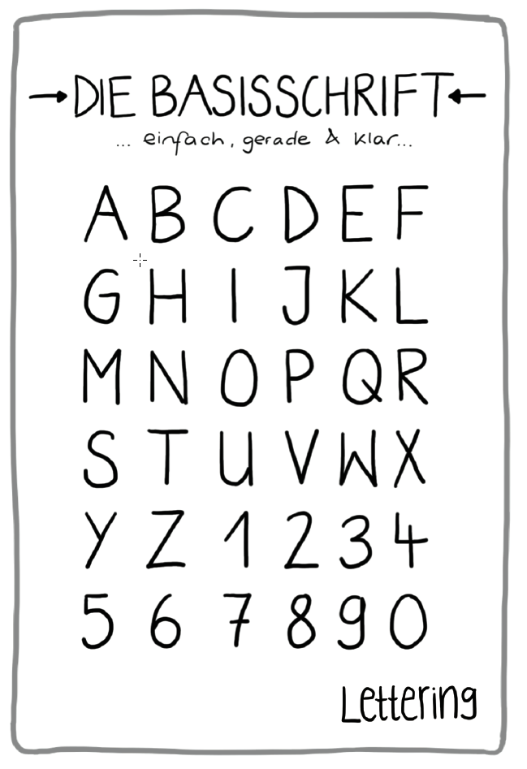
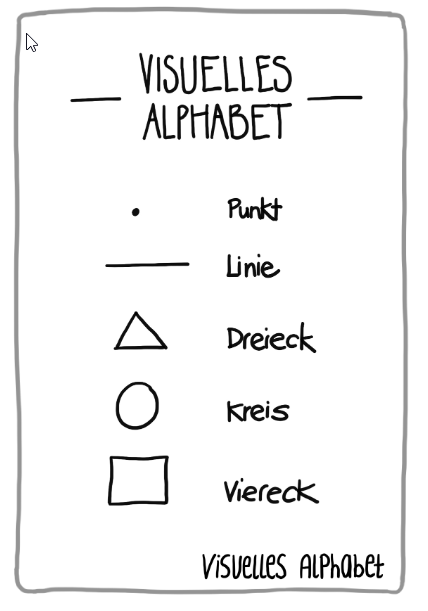
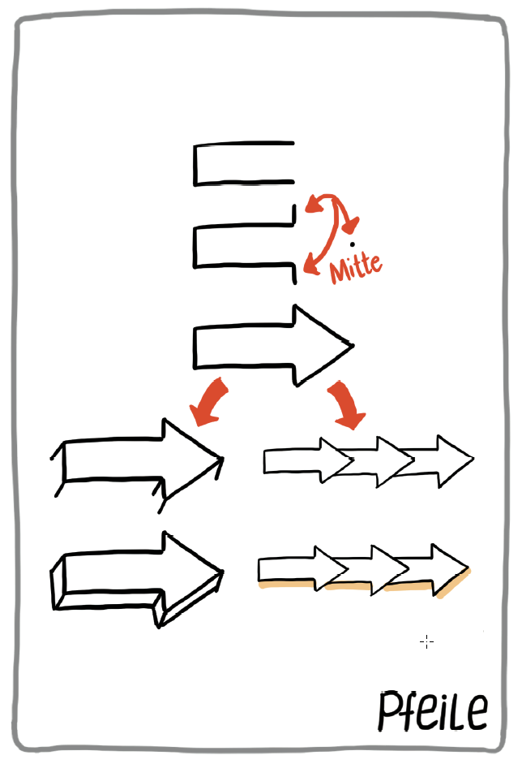
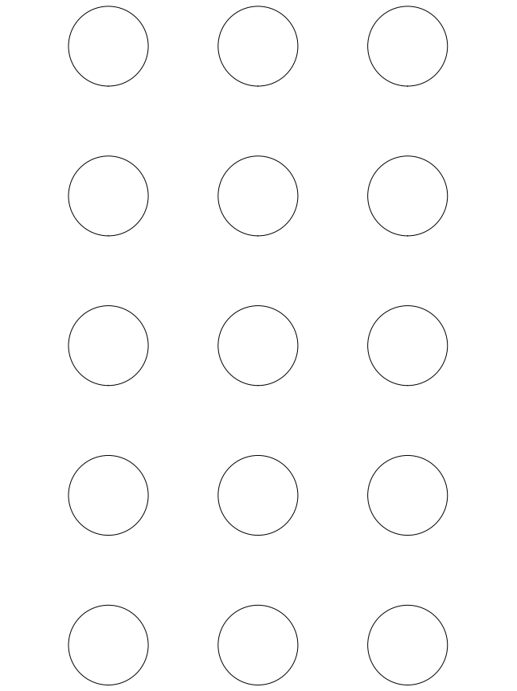
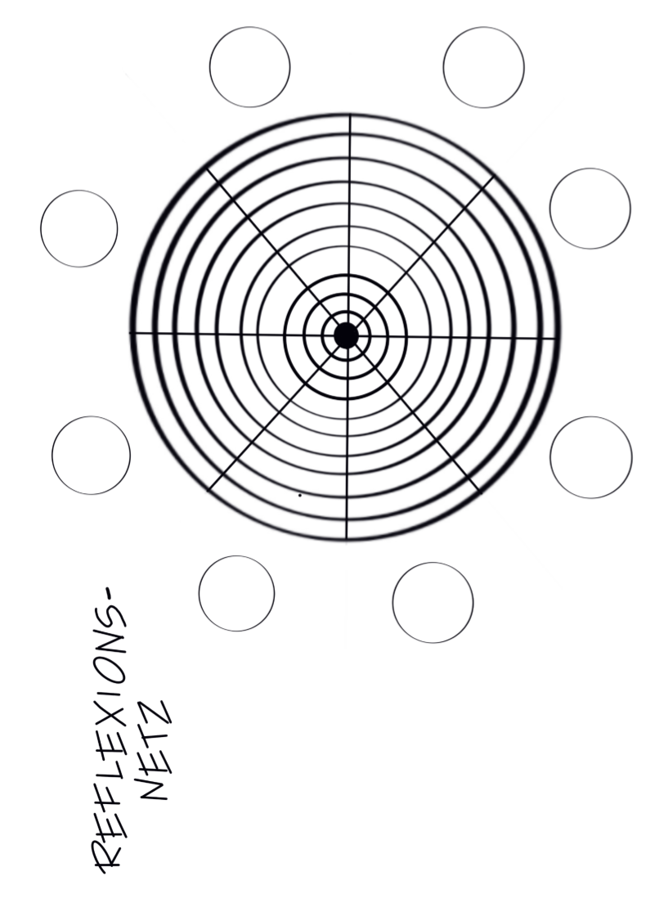

Version 0.4 (2019-06-26)
Das Verb “lernos” ist die Zukunftsform von “lernen” auf Esperanto (mi lernos = ich werde lernen, ni lernos = wir werden lernen). lernOS ist ein Betriebssystem für Lebenslanges Lernen und Lernende Organisationen. lernOS ist aber keine Software, sondern “Brainware”. Es ist eine Art zu Denken und zu Handeln, um als Einzelperson, Team oder Organisation im 21. Jahrhundert erfolgreich zu sein. Das groß geschriebene “OS” im Namen unterstreicht die Bedeutung der Digitalisierung für unsere vernetzte Wissensgesellschaft.
Zu lernOS gibt es drei grundlegende Leitfäden beschrieben, die den Ansatz auf individueller Ebene (lernOS für Dich), auf Ebene von Teams (lernOS für Teams) und auf Ebene von Organisationen (lernOS für Organisationen) beschreiben. Zusätzlich gibt es die lernOS Toolbox, die oft genutzte Methoden und Werkzeuge erklären (z.B. Podcast, Barcamp, Sketchnoting, Expert Debriefing). lernOS ist nicht auf der sprichwörtlichen grünen Wiese entstanden, sondern ist eine Zusammenstellung von bereits bestehenden und bewährten Methoden. Alle lernOS Leitfäden sind unter der offenen Lizenz Creative Commons Attribution (CC BY) auf der lernOS Webseite verfügbar und können gerne an die eigenen Bedürfnisse angepasst werden.
Wenn du weitere Fragen bezüglich lernOS hast, oder Unterstützung von Gleichgesinnten brauchst, kannst du die Community-Plattform CONNECT nutzen oder mit #lernOS auf Twitter schreiben. Beachte: Die Meisterschaft von lernOS ist eine Frage von Monaten oder Jahren, nicht Stunden oder Tagen.
Also: Keep Calm & Sketch On!
Vielen Dank an Simon Dückert für die inhaltliche, technische und moralische Unterstützung! Geschrieben wurde der Leitfaden von: Marjukka Zsagar-Renneberg, Raffaelina Rossetti, Benjamin Krüger, Lars Bartschat und Karl Damke
Geholfen haben dabei:
Ein großes Dankeschön für konstruktives Feedback und Korrekturen geht an:
Um diesen Leitfaden bestmöglich nutzen zu können, solltest du etwas über lernOS wissen, auf dem dieser Leitfaden aufbaut. Dazu das Wichtigste in einer Sketchnote:
Wenn du mehr wissen willst, kannst alles über lernOS bei Cogneon nachlesen, dort den Leitfaden herunterladen oder dir diesen Podcast mit lernOS Mastermind Simon Dückert anhören. Im lernOS Sketchnote Leitfaden werden wir an einigen Stellen auf bestimmte Inhalte aus dem lernOS Leitfaden oder weiterführende Ressourcen verweisen. Mach dir aber keinen Stress und konzentriere dich auf die Inhalte und Methoden, die für dich unmittelbar wichtig sind - so hast du noch etwas übrig für die nächsten Sprints. ;)
Warum ein Sketchnote Lernpfad?
Na klar, Übung macht den Meister und Sketchnotes sind für jeden etwas anderes.
Was aber immer hilft beim besser werden, sind Motivation, konstruktives Feedback und Zugang zu guten Ressourcen zum Thema. Dafür haben wir den lernOS Sketchnote Lernpfad entwickelt. Er enthält:
eine Einführung ins Sketchnoting & Wissen zu Material und Grundlagen (Kapitel 4)
23 Katas (Übungen) zu den wichtigsten Bereichen des Sketchnotens (Kapitel 5)
Ressourcen zum Weiterlernen, Vernetzen und Inspirieren lassen
Der Lernpfad funktioniert für alle “Level”, egal ob du erst seit 5 Minuten oder schon seit 5 Jahren sketchnotest. Wenn du ganz am Anfang stehst, wird dir sicherlich Kapitel 4 dabei helfen den Einstieg zu schaffen.
Keine Praxis ohne ein bisschen Theorie. Im folgenden Kapitel werden wir auf die Basics des Sketchnotens eingehen.
“Sketchnotes sind visuelle Notizen, die aus einer Mischung aus Handschrift, Zeichnungen, handgezeichneter Typografie, Formen und grafischen Elementen wie Pfeilen, Kästen & Linien bestehen.” - Mike Rohde, Autor des Sketchnote Handbuchs und “Erfinder” des Begriffs Sketchnote
“Sketchnotes ist Rumkritzeln während du dir Notizen machst” - Kevin Thorn, Nuggethead
Wer hat nicht als Kind auf sämtliche Oberflächen gemalt, gezeichnet und vor allem gekritzelt? Das Kritzeln (englisch: Doodling) ist ein super-einfacher Weg, Informationen zu verstehen und mit anderen zu teilen. Sunni Brown beschreibt das sehr eindrücklich in ihrem TED Talk “Doodlers, unite!”. In ihrem Buch “The Doodle Revolution” zeigt Sunni, wie stark das Skizzieren von Informationen Innovation und kreatives Denken motiviert, indem sie kurz und bündig, sowie einfach verständlich auf den Punkt gebracht werden.
Historisch gesehen, sind wir Menschen visuelle Wesen. Bilder verwenden wir seit mehr als (20.000 Jahren)[https://journal.lib.uoguelph.ca/index.php/perj/article/view/3137], die ältesten Höhlenmalerein sind sogar noch älter. Sie werden teilweise auf mehr als (35.000 Jahre datiert)[https://de.wikipedia.org/wiki/H%C3%B6hlenmalerei].
Von einem wissenschaftlichen Standpunkt aus werden Sketchnotes durch die “Dual Encoding Theorie” gestützt. Diese beschreibt, dass Informationen die doppelt, also in unserem Fall als Text und Bild, kodiert und abgespeichert werden, stärker verankert werden. Sie lassen sich später schneller und genauer wieder erinnern, als “einfache” Textnotizen. Das Nutzen von Stift und Papier, oder auch digitalem Stylus und Tablet, hat also immense Vorteile gegenüber z. B. dem Mittippen am Laptop in einer Vorlesung oder einem Meeting. (s. Artikel von Oppenheimer und Mueller) Das tiefe Verständnis von Konzepten und Ideen erschließt sich dem Sketchnoter also viel schneller und einfacher als dem “Mitschreiber”, der Wort für Wort alles zu Papier bringt oder in sein Notebook hackt.
Vielleicht liegt das daran, dass beim Rumkritzeln und Skizzieren ein Prozess im Gehirn abläuft, der konstruktiv ist. Wir müssen dafür die verschiedenen Elemente wie Legosteine zusammenbauen und dabei unser Wissen integrieren und organisieren, damit kein totales Chaos auf dem Papier entsteht. Wie Hazel Messenger in ihrem Artikel “Drawing Out Ideas” weiter schreibt, wird durch die Verbindung von Spüren, Fühlen, Denken und Tun auch neues Wissen erzeugt, also aus all diesen Bauelementen konstruiert.
Einfach auf den Punkt gebracht: Bilder, vor allem in Kombination mit Text, sind purem Text einfach überlegen. In der Literatur spricht man vom Picture Superiority Effect.
Wenn dir das alles zu komplex und textlastig ist, wir haben dir dazu eine Sketchnote erstellt:
Du kannst praktisch alles Sketchnoten. Hier nur ein paar Beispiele:
Du kannst mit Sketchnotes also:
Das klingt ja alles ganz nett, aber was brauche ich denn, um mit dem Sketchnoten anfangen zu können? Ist das nicht alles total kompliziert? Zum Glück nicht! Das einzige, was du tatsächlich brauchst, sind ein Stift und eine Unterlage, auf der du Sketchnoten kannst, das kann ein Block, ein Notizbuch, eine Serviette sein oder der berühmte Bierdeckel. Natürlich kannst du auch digital auf deinem Tablet Sketchnoten.
Sketchnotes mit Stift und Papier sind die “ursprüngliche” Art der visuellen Notizen. Dieses “analoge” Vorgehen hat viele Vorteile. Einige sind sehr subjektiv, am besten du bildest dir deine eigene Meinung:
Natürlich hat jede Medaille zwei Seiten, ein paar Dinge können Stift und Papier nicht so gut:
Auch wenn dir viele Webseiten etwas anderes erzählen, du brauchst weder spezielles Papier oder besonders teure Notizbücher, noch sind teure Stifte notwendig. Für den Anfang nimmst du einfach ein Blatt Papier aus dem Drucker und den erstbesten Stift, der auf deinem Schreibtisch liegt.
Eine umfangreiche Liste findest du auf der Website von Sketchnote Hangouts.
Wir haben uns hier gegen eine Auflistung von Marken und Produkten entschieden. Wir finden, Sketchnoten braucht keine teuren Stifte und besondere Notizbücher. Der einfachste Werbegeschenk-Kuli und ein die Rückseite eines mißlungen Ausdrucks sind perfekt.
Ein “zu schönes” Sketchbook ist manchmal genau das, zu schön. Du traust dich nicht, anzufangen, aus Sorge, die Schönheit zu “ruinieren”. Also: KISS - Keep it simple, stupid!
Mittlerweile kannst du auch super digital sketchnoten. Dafür empfiehlt sich in der Regel ein Tabletcomputer, die meisten Smartphones sind noch zu klein. (Ein Samsung Galaxy Note könnte aber schon reichen, wie es Opels Art hier zeigt…) Etwas komfortabler sind die meisten Tablets, wie z. B. das Apple iPad (Pro), das Samsung Galaxy Tab oder die Microsoft Surface Reihe.
Das digitale Sketchnoten bringt einige immense Vorteile mit sich:
Wie schon Stift und Papier, hat auch das Sketchnoten auf dem Tablet ein paar Nachteile:
Apps zum Sketchen:
Egal was das Thema ist, für deine Sketchnotes benutzt du immer wieder die gleichen Elemente. Wenn du diese grundlegend trainieren willst, oder mal wieder etwas Inspiration und Abwechslung brauchst, empfehlen wir dir “Sketch it - Das Kartenspiel” von Wibke Tiedmann und Stefanie Maurer, das du hier herunterladen kannst und unter CC BY SA 4.0 verwenden darfst. Alle folgenden Beispiele zu den Sketchnote Elementen stammen aus diesem Spiel.
„Sketch it – Das Kartenspiel„ vonWibke Tiedmann & Stefanie Maurer, Lizenz:CC BY-SA 4.0.
Ein Container strukturiert eine Sketchnote, indem er anderen Elementen einen Rahmen bietet.

Der Trenner sorgt dafür, dass die Elemente einer Sketchnote klar voneinander separiert sind und schafft so Ordnung und Klarheit.

Deine Sketchnote besteht aus Text und grafischen Elementen, wobei auch die Texte unterschiedlichste Formen und Farben annehmen können.

Symbole und Icons kannst du auf unterschiedliche Art und Weise beim Sketchnoten einsetzen. Du kannst dir z. B. ein eigenes Icon-Set anlegen, mit dem du wiederkehrende Elemente kennzeichnest. Ein Klassiker ist die aufleuchtende Glühbirne für eine Idee oder das Ausrufezeichen für etwas, das besonders wichtig ist.

Verbinder und Pfeile sind starke Strukturelemente beim Sketchnoten. Sie erzeugen den Flow, dem das Auge des Betrachters folgt. Sie zeigen, welcher Teil auf welchen folgt, z. B. in einer zeitlichen oder logischen Abfolge. Verbinder und Pfeile halten deine Sketchnote zusammen. Sie sind das natürliche Gegenstück zum Trenner.

Die Figuren sind die Akteure auf deinen Sketchnotes. Mit ihnen können Aktionen und Emotionen von einzelnen Personen aber auch von Teams oder Gruppen in verschiedenen Situationen dargestellt werden. Eventuell kann das Hinzufügen von Gesichtern oder Mimiken zum Darstellen von Emotionen hilfreich sein aber auch über die Körperhaltung drücken wir auch schon sehr viel unserer Gefühle und Regungen aus. Ob du den Figuren ein Gesicht gibst oder nicht hängt also fast gänzlich von deinem persönlichen Geschmack ab.

Mit Diagrammen kannst du super Daten in deiner Sketchnote visualisieren. Oft sind Programme wie Excel ein wenig “zu viel”. Mit ein wenig Übung kannst du aus Elementen, wie Balken, Linien und Kreisen einfache, aber sehr wirkungsvolle Diagramme erschaffen. Ein sehr beeindruckendes Beispiel für analoge Datenvisualisierung ist das Projekt “Dear Data” von Giorgia Lupi und Stefanie Posavec, die sich über ein Jahr gegenseitig Postkarten mit handgezeichneten Visualisierungen geschickt haben.

Ein “One and Done”-Sketchnoter erstellt seine Sketchnote zum Beispiel bei einem Talk auf einer Konferenz oder während eines Meetings. “One and Done” bedeutet, dass er mit der Sketchnote fertig ist, sobald das Ereignis beendet ist. Vielleicht wird am Schluss nochmal das ein oder andere kleine Detail korrigiert oder ergänzt, aber “One and Done” ist quasi “Live”.
Beim iterativen Sketchnoten arbeitest du in mehreren, meist zwei, Stufen. Während des Events erstellst du eine grobe Entwurfsversion deiner Sketchnote, die anschließend nach dem Event überarbeitet und finalisiert wird. So kannst du detaillierter und genauer arbeiten als beim “One and Done” Ansatz, brauchst allerdings auch deutlich mehr Zeit, bis das endgültige Produkt fertig ist.
Einen noch tiefergehenden Prozess beschreibt Mauro Toselli, bekannt als [@xLontrax](https://twitter.com/xlontrax), in seinem Buch “The xLontrax Theory of the Sketchnote”:
Mauro definiert dafür den “Eraser Critical Point”, den er definiert als “Anzahl der Elemente, die du aus deiner Sketchnote entfernen musst, um ihre Bedeutung zu kompromittieren”. So sorgt sein Ansatz dafür, dass eine Sketchnote exakt die richtige Anzahl an Elementen hat, um den gewünschten Inhalt vermitteln. Laut seiner Erfahrung erfolgt dieser komplexe Prozess bei geübten “One and Done”-Sketchnotern automatisiert während des Sketchnotens.
Welcher Workflow der richtige ist? Das hängt von vielen Dingen ab:
Hier gibt es kein Richtig oder Falsch, Sketchnote wie du es brauchst!
Mauro hat extra für diesen Lernpfad eine Zusammenfassung gesketchnotet:

Wenn du dich 12 Wochen mit einem Thema beschäftigst, ist das gleichzeitig sehr viel und sehr wenig Zeit. Die Katas (Übungen) in diesem Leitfaden sollen dir dabei helfen, das Beste aus dir und deinem Circle herauszuholen. Sie sind so aufgebaut, dass sie sowohl für Anfänger als auch für Fortgeschrittene geeignet sind. Nehmt euch vor Start des Sprints Zeit, den Aufbau und die einzelnen Katas genauer anzuschauen. Manchmal gibt es mehrere Katas in einer Woche, sucht euch eine aus, oder macht beide, je nach Lust und Laune. Es gibt keine Kata-Polizei: Tauscht gerne Katas aus oder modifiziert sie, damit sie besser zu euren Zielen passen. Vielleicht schaut ihr auch einfach mal in den anderen lernOS Lernpfaden, welche Katas dort genutzt werden und ob diese nicht besser für euch sind…
Wie ist dieser Lernpfad aufgebaut?
Lass uns das aus zwei Perspektiven betrachten. Zuerst schauen wir, wann deine individuellen Ziele im Laufe der zwölf Wochen Thema im Circle sind. Dann schauen wir uns an, nach welchem System die Katas aufgebaut sind.
Sketchnoten ist für jeden etwas anderes und wird auch für dich, je nach Situation, immer anders sein. Trotzdem gibt es grundlegende Qualitäten, die eine Sketchnote auszeichnen, die du dir nach Jahren noch gerne anschaust und die z. B. auch für deine Kolleginnen verständlich ist. Der Sketchnoter Mauro Toselli, den wir oben schon erwähnt haben, hat sich jahrelang mit diesen Qualitäten beschäftigt. Wir haben seine Einteilung der Qualitäten einer Sketchnote übernommen und die Katas auf ihnen aufgebaut.
#ProTipp: in vielen Fällen ist die Zeit für das Ausführen der Übungen im Weekly zu kurz. Wir nutzen daher die Flipped Classroom Methode. Für jedes Weekly gibt es eine Kata, die jedes Circle-Mitglied als “Hausaufgabe” vorbereitet, so dass ihr im Weekly mehr Zeit habt, die Ergebnisse zu besprechen. Das wird begleitet durch Leitfragen, die ihr gerne ergänzen könnt, und immer wieder gibt es auch Katas, die ihr gemeinsam während des Weeklys absolviert.
Ihr wählt eure eigenen Schwerpunkte für den Sprint – was wollt Ihr neu lernen oder vertiefen? Wo steht ihr? Was ist herausfordernd? Was ist jetzt gerade dran, wie geht es dann weiter – was wäre eher ein Schwerpunkt für einen weiteren Sprint? „Alles auf einmal und dann perfekt“ (und Überforderung / Frust) oder lieber doch „practice makes progress“ (Brandy Agerbeck) – Übung macht Fortschritte (und Spaß)?

Die hier aufgeführten Katas sind Vorschläge. Betrachtet sie durch eure eigene Brille. Wenn verschiedene Katas zur Auswahl stehen – welche passt am besten zu eurem Schwerpunkt? Oder wollt ihr alle machen? Wenn ihr selbst Ideen für Katas (oder Variationen) habt, die noch besser zu eurem Schwerpunkt passen, nutzt diese! Und wenn ihr die dann mit uns teilt oder den Lernpfad selbst ergänzt, helft ihr allen anderen, die nach euch dem Lernpfad folgen! (… und verdient natürlich einen Haufen Karma-Punkte!)
Auf den nächsten Seiten findest du den Ablaufplan für den Sprint in Kurzform. Die Erklärungen für die einzelnen Katas und Warm-Ups folgen dann auf den Seiten danach.
Bevor es losgeht, investiert etwas Zeit um euch kennenzulernen und die Rahmenbedingungen für euren Sprint abzusprechen.
Als Vorbereitung
Im Weekly
Check in (2 Minuten pro Member)
Warm Up: Kringel-Vögel (5 Minuten)
Vorstellung: Wer bist du? Stell dich vor. Hier solltest du natürlich anhand deines Sketchnote-Selfie vorgehen. (5 Minuten pro Member)
Leitfragen:
Arbeitest du lieber digital oder analog?
Nutzt du Sketchnotes eher privat oder beruflich?
Wie lange machst du schon Sketchnotes?
Was sind deine Lieblingsmaterialien (Papier, Stifte, Programme)?
Kata 2: Circle Setup (20 Minuten)
Kata 3: Feedback (10 Minuten)
Check Out (1 Minute pro Member)
In dieser Woche wählst du dein Ziel für den Sprint.
Als Vorbereitung
Kata 4: Mein Ziel für die nächsten 12 Wochen
Kata 5: Ein Termin mit dir selbst
Im Weekly
Check in (2 Minuten pro Member)
Warm Up: Ziele (5 Minuten)
Wie visualisiert ihr Ziele? Zeichnet Icons und vergleicht sie miteinander. Wie visualisiert ihr, dass die Ziele erreicht wurden?
Austausch: Eure Ziele im Sprint (10 Minuten pro Member)
Leitfragen:
Warum machst du das?
Was inspiriert dich daran ?
Was heißt es für dich, ein Ziel erreicht zu haben?
Wie hast du deine Ziele nach OKR quantitativ messbar gemacht?
Wie feierst du, wenn du dein Ziel erreicht hast?
Austausch: Ein Termin mit dir selbst (5 Minuten)
Habt ihr alle einen Termin mit euch selbst in den Kalender eingetragen? Was hat euch dabei geholfen?
Check-Out (1 Minute pro Member)
In Woche 2 geht es um das geschriebene Wort: Wie unterstützt es die Aussage deiner Sketchnote am besten und wie kommst du dahin?
Als Vorbereitung
Kata 6: Letter deinen Lieblingsspruch
Kata 7: Nimm dir Zeit beim Schreiben
Im Weekly
Check in (2 Minuten pro Member)
Warm Up: Ganz groß und ganz klein.
Feedback, Austausch und Tipps zu den Katas (40 Minuten)
Leitfragen:
Wie nutzt du unterschiedliche Schriften in deinen Sketchnotes?
Welche deiner Schriften nutzt du wofür?
Welche deiner Schriften gefällt dir besonders gut? Welche nicht?
Möchtest du eine neue Schrift lernen und wofür brauchst du sie?
Wie hängen für dich Stifte und Schrift zusammen? Mit welcher Stiftstärke kannst du am besten zeichnen und schreiben? Wie hierarchisierst du mit Schriftgröße, Fonts und Stiftstärken?
Zeigt euch gegenseitig (eigene) Beispiele, die ihr besonders gelungen findet.
Check-Out (1 Minute pro Member)
Jede Sprache besteht aus Einzelelementen: Entwickle die Bildelemente, welche deiner Sprache am meisten entsprechen und finde deinen Stil.
Als Vorbereitung
Kata 8: Einkaufszettel
Kata 9: Bildersammlung
Im Weekly
Check in (2 Minuten pro Member)
Warm Up: Icons
Alle bringen einen Begriff mit, den sie spannend oder schwer zu visualisieren finden. Alle Begriffe werden in je 30 Sekunden gesketcht und dann verglichen. (5 Minuten)
Austausch über die Kata(s) (40 Minuten)
Leitfragen:
Wie gut ist euer visuelles Vokabular?
Wie sammelt/dokumentiert ihr eure Icons?
Welche Methoden nutzt ihr, um sie immer greifbar zu haben?
Wollt ihr weiter Icons sammeln und wie wollt ihr sie teilen?
Welche Icons sind eure Top-5-Icons , die ihr immer wieder in Sketchnotes verwendet?
Wie zufrieden seid ihr mit Ihnen?
Könnt ihr noch etwas an ihnen verbessern?
Sketcht das Icon, das ihr verbessern wollt, und befragt die anderen.
Check out (1 Minute pro Member)
In dieser Woche entdeckst du die Welt der Farben und Strichstärken und wie du damit Akzente in deinen Sketchnotes setzen kannst.
Als Vorbereitung
Kata 10: Was bedeuten Farben für dich?
Kata 11: Nie genug Stifte
Im Weekly
Check in (2 Minuten pro Member)
Warm Up: Weniger Details bitte (5 Minuten)
Kata 12: 1 Sketchnote 5 Farben (20 Minuten)
Bereitet die Kata vor und beendet sie gemeinsam
Leitfragen:
Welche Farben passen zu deinen Themen?
Wechselt ihr die Farben abhängig von den Themen?
Wie schafft ihr es Struktur zu schaffen, selbst wenn ihr nur wenige Stifte habt?
Check Out (1 Minute pro Member)
Woche 5 steht ganz im Zeichen der Ordnung: Sortiere und gruppiere alle bisher verwendeten Elemente und füge sie zu einem stimmigen Layout zusammen.
Als Vorbereitung
Im Weekly
Check in (2 Minuten pro Member)
Warm Up: Container (5 Minuten)
Zeichnet verschiedene Container und besprecht, wofür sie sich eignen. (Eine Wolke steht zum Beispiel eher für eine Idee als für ein Ergebnis/Beschluss.)
Kata 14: Videosketching (40 min)
Check Out (1 Minute pro Member)
Boxenstopp: Reflektiere das Erreichte, stelle es deinen Circle Members vor und gebt euch gemeinsam Feedback. Macht euch fit für die zweite Hälfte des Circle.
Als Vorbereitung
Im Weekly
Check in (2 Minuten pro Member)
Warm Up: Zeichne dein Gegenüber (5 Minuten)
Kata 15: Zwischenstand präsentieren (10 Minuten pro Member)
Check out (1 Minute pro Member)
Verstehst du mich? Diese Woche testest du, ob deine Sketchnotes die Aussagen transportieren, welche du beabsichtigt hast.
Als Vorbereitung
Im Weekly
Check in: (2 Minuten pro Member)
Warm Up: Draw Toast (5 Minuten)
Austausch über die Kata
Leitfragen:
Welche Erwartungen hattest du an die Verständlichkeit deiner Sketchnote?
Wurden diese erfüllt?
Wie war das Feedback in Bezug auf Lesbarkeit, Layout, Wortwahl?
Was hat für dich besonders gut funktioniert?
Was war besonders herausfordernd für dich? (Bspw. Sprechgeschwindigkeit im Video, wichtige Dinge filtern, …)
Was hast du für deine nächsten Sketchnotes gelernt, was möchtest du beibehalten und was möchtest du anders machen?
Check out (1 Minute pro Member)
Nachdem wir in Woche 7 uns gegenseitig Feedback gegeben haben, traust du dich nun in die Öffentlichkeit: Hol’ dir aktiv Feedback zu den Inhalten deiner Sketchnotes von Personen außerhalb des Circle ein.
Als Vorbereitung
Im Weekly
Check in (2 Minuten pro Member)
Warm Up: Ablauf (Woche 8)
Austausch über Kata 16 (20 Minuten)
Leitfragen:
Wo und wie hast du deine Sketchnote geteilt?
Wie komfortabel/unkomfortabel war es?
Welche Art Feedback hast du erhalten?
Wie genau fragst du nach Feedback?
Kata 18: Top5 Ressourcen (20 Minuten)
Check out (1 Minute pro Member)
Weichenstellung zum Endspurt: Entwickle dein eigenes Projekt weiter oder vertiefe das bisher Erlernte - nutze das Feedback, um dich selbst weiterzuentwickeln.
Als Vorbereitung
Entscheidet euch, welche Schwerpunkte ihr setzen wollt:
Wenn du in diesem Sprint ein eigenes Projekt bearbeitest, das du bis Woche 11 abgeschlossen haben möchtest, nimm dir jetzt noch einmal Zeit daran zu arbeiten und dir Feedback dazu einzuholen.
Wenn du kein konkretes Projekt/Produkt hast, nutze die Katas 19 und 20/21 für eine Reflexion des Sprints und dem bisher Gelernten.
Kata 19: Soulshine-Selfie
Kata 20: Reflexions - Sketchnote (Teil1) “Struktur-Gedanken”
Im Weekly
Check in (2 Minuten pro Member)
Warm Up: visuelle Kommunikation macht den Unterschied (5 min)
Feedback zu euren Projekten, Austausch über Kata 19 & 20 und freie Wiederholung
Check out (1 Minute pro Member)
Oder auch: “Blamiere dich täglich” :-) - Probier’ dich am Improvisieren und der spontanen Darstellung deiner Assoziationen.
Als Vorbereitung
Überleg dir Begriffe für Kata 22: Montagsmaler
Kata 21: Reflexions-Sketchnote (Teil 2) “Der strukturierte Pfad”
Im Weekly
Check in (2 Minuten pro Member)
Warm Up: Figuren in Aktion (5 Minuten)
Austausch über Kata 21
Kata 22: Montagsmaler (25 min)
Check out (1 Minute pro Member)
Man darf auch mal stolz sein: Zeig’ deinen Circle Member, was du geleistet und an Erkenntnissen (auch über dich) gewonnen hast.
Als Vorbereitung
Im Weekly
Check in (2 Minuten pro Member)
Präsentationen (10 Minuten pro Member)
Check out (1 Minute pro Member)
Du hast dich auf den Weg gemacht: Aber bist du auch schon am Ziel? Wie geht es weiter? Hast du deine Passion gefunden? Ist nach dem Circle vor dem Circle? Und wann gehen wir eigentlich feiern?
Als Vorbereitung
Im Weekly
Check in (2 Minuten pro Member)
Warm Up: Besondere Merkmale (5 Minuten)
In dieser Woche gibt es kein klar definiertes Programm mit weiteren Übungen. Das Ergebnis eurer Arbeiten habt ihr schon in Woche 11 vorgestellt - jetzt ist die Zeit, den Sprint gemeinsam ausklingen zu lassen.
Sprecht über den Circle und eure Erfahrungen in den letzten Wochen. Was ihr gelernt habt und was der Lernpfad mit euch gemacht hat. Vielleicht habt ihr schon Ideen, was ihr als nächstes vorhabt. Wenn nicht, lasst euch von den anderen inspirieren. Besprecht, mit was ihr die Wochen nach dem Sprint ausfüllen wollt, denn es ist auf jeden Fall wichtig, dran zu bleiben, damit die Skills und die positiven Gewohnheiten, die ihr im Sprint aufgebaut habt, weiter gefestigt werden. Wie wäre es mit einer neuen Iteration des Sketchnote Lernpfad mit neuen Zielen und neuem Fokus?
Ihr habt die letzen Wochen Großartiges geleistet - das solltet ihr auf jeden Fall in dieser Woche feiern.
Check out (1 Minute pro Member)
Um dich den anderen in deinem Circle vorzustellen, zeichne eine Sketchnote über dich. Bau die wichtigsten Fakten über dich ein, erwähne Dinge, die du (nicht) magst, zwei Fakten über dich, die nicht offensichtlich sind und einen praktischen Sketchnote-Tipp. Versuch auch die Frage zu beantworten, warum du visualisierst. Wenn du fertig bist, teile deinen Sketchnote-Selfie mit den anderen.
Beispiel eines Sketchnote-Selfies beim Start eines LernOS Circle zum Thema “SketchnoteOutLoud”:

Wenn ihr euch im Circle noch nicht kennt, lernt euch in der Woche 0 kennen. Plant, wann Ihr euch trefft, welche Tools ihr nutzt und wer der Moderator ist.
Definiert einen Circle-Moderator, der sich um Event- und Zeitmanagement kümmert. Eines der größten Hindernisse für erfolgreiche Circle ist Disziplin und Zeitmanagement. Der Moderator ist nicht der “Chef” des Circle, sondern ein normales Circle-Mitglied, das sich um einen reibungslosen Ablauf kümmert. Definiert Tag und Uhrzeit des wöchentlichen Treffens. Definiert, ob ihr euch persönlich oder virtuell trefft. Definiert die Tools, die ihr für Kommunikation und Dokumentation im Circle verwendet. Entscheidet, welche der vorgeschlagenen Übungen ihr im Kreis machen wollt.
Eine ganz wichtige Funktion des Circles ist es, Feedback zu deinen Zielen und zu deinen Sketchnotes zu bekommen und den anderen Feedback zu geben. Damit ihr euch dabei besser versteht, nehmt euch kurz Zeit, über eure Vorstellung von konstruktivem Feedback zu sprechen. Dazu gehört auch die Frage „Warum visualisierst du? und der Grundsatz „Vergleich dich mit dir selbst“.
Weitere Informationen:
Brandyfesto: Drawing as a thinking toolVideo Doug Neill: Sketchnoting is a superpower
Video: Doug Neill: How to critique your sketchnote
Was willst du in den nächsten zwölf Wochen erreichen? Wähle ein Ziel, das dir wirklich, wirklich wichtig ist und bei dem du im Sprint Fortschritte machen kannst. Du wirst die die OKR-Methode von Google verwenden, um dieses Ziel zu definieren. Besonders für Sketchnote-Einsteiger ist es nicht oberste Priorität, das Ziel zu erreichen. Im Fokus steht neben dem Erlernen des Basiswissens, wie zum Beispiel das Aneignen eines eigenen visuellen ABCs, natürlich ganz besonders das regelmäßige Üben der neu gewonnenen Fähigkeiten und zu guter Letzt die Hauptsache: ganz viel Spaß :-)
Um einen optimalen Lernerfolg zu bekommen, ist es dennoch sehr wichtig, dir selbst Ziele zu setzen, die dich motivieren und mit denen du deine Fortschritte greifbar und sichtbar machen kannst. Überlege, ob du vielleicht auf ein konkretes Produkt hinarbeiten möchtest. Das könnte zum Beispiel ein Sketchnote Workshop für deine Kolleg*innen sein, oder dein erstes Graphic Recording, oder, oder, oder…
Überlegt euch, wie ihr euren Fortschritt in euren OKRs im Circle teilen wollt. Allein im Check-In ist ein bisschen wenig. Gibt es in eurem Dokumentations-Tool eine Möglichkeit dafür, euren Fortschritt zu protokollieren?
Weitere Informationen:
Nimmst du dir ausreichend Zeit für deine persönliche Entwicklung und für die Arbeit an deinen Zielen? Viele Menschen sind mit ihren täglichen Aufgaben beschäftigt und kümmern sich nicht genug um ihre Entwicklung und ihr Wohlbefinden. Ein guter Ansatz ist es, einen Termin mit sich selbst zu vereinbaren und sich diese Zeit im Kalender zu reservieren.
Übung (15 Minuten):
Überprüfe deinen Kalender und suche nach möglichen Terminen mit dir selbst. Eine Stunde oder sogar 30 Minuten pro Woche ist ein guter Ausgangspunkt. Trage dir einen Termin mit dir selbst in den Kalender ein. Mache ihn nach Möglichkeit zu einem wiederkehrenden Termin, damit diese Zeit für dich zur Gewohnheit wird. Finde mindestens fünf Termine:
…
…
…
…
…
Besprecht eure Ansätze im Circle.
Weitere Informationen:
Eine Sketchnote lässt sich sehr gut mit verschiedenen Schriftarten und -größen gestalten und gliedern. Doch oft fallen wir beim Sketchnoten wieder zurück in unseren Gewohnheiten und nutzen immer nur dieselben, alten Lettern.
Nimm dir für diese Kata ein DIN-A5-Blatt und einen nicht zu langen Spruch deiner Wahl. Überlege dir, welche Wörter du in welcher Schrift und in welcher Größe schreiben möchtest. Was ist besonders wichtig, wo schwingt welche Emotion mit? Vielleicht machst du auch erst einmal eine kleine Bleistiftskizze für die Größenverhältnisse und zeichnest dann in sauber nach. Wenn du Inspiration für Schriften brauchst, schau dir doch die entsprechenden Karten im Sketchnote Game an.
Weitere Informationen:

Ein Killer-Kriterium für eine gute Sketchnote ist ihre Lesbarkeit. Vor allem, wenn wir oft viel zu viel auf Tastaturen herumtippen und im Alltag nicht viel mit der Hand schreiben, ist die antrainierte Schönschrift aus der Grundschule oft nur noch eine blasse Erinnerung.
Im Anhang findest du ein Übungsblatt zur “Architects Handwriting”, die für ihre sehr gute Lesbarkeit bekannt ist. Wenn du deine eigene Handschrift oft kaum lesen kannst, solltest du dir vielleicht regelmäßig etwas Zeit nehmen, um diese Schrift zu trainieren.
Eine andere Herangehensweise ist es, dir einmal deutlich mehr Zeit fürs Schreiben zu nehmen und zu schauen, welche Auswirkungen das auf deine Lesbarkeit hat. Schreib dazu einen kurzen Satz in deiner normalen Handschrift und stopp dabei (ungefähr) die Zeit. Schreib dann den gleichen Satz noch einmal, mit doppelt so viel Zeit und vielleicht noch einmal, noch langsamer. Schau dir die Buchstaben genau an, was verändert sich? Beschleunige jetzt allmählich wieder und versuche dabei die positiven Veränderungen beizubehalten.
Weitere Informationen:
Erstelle deinen Einkaufszettel statt mit Wörtern mit Sketchnotes. Übe auf diese Weise unterschiedliche Symbolen für Gemüse, Obst, Tiere, Getränke, Lebensmittel und Drogerieartikel. Nach einem Monat schaue dir deinen Einkaufszettel an und erstelle für jede der 6 Kategorien eine eigene visuelle Bibliothek.
1 Einkaufszettel - 10 Minuten
Dauer der Kata - 1 Monat
Ergebnis - 6 Kategorien für deine visuelle Bibliothek
Lege dir für deine Themen eine Bildbibliothek an. Notiere dafür 10 Schlüsselbegriffe aus deinem Themenbereich. Und nun suche in deiner Umgebung, in Büchern, in Bildern und Medien nach Anregungen für deine eigene Darstellung. Zeichne unterschiedliche Varianten oder nur eine. Wähle aus, was am besten zu dir passt. Das speichere in deiner Sammlung.
Stelle im Weekly deine Ideen vor und diskutiere in der Gruppe darüber. Diskutiert, wo ihr die besten Anregungen gefunden habt.
Weitere Informationen:
Farben transportieren Emotionen direkter als jedes Layout. Beantworte die folgenden Fragen für dich.
Tauscht euch über die Ergebnisse aus.
Gibt es Unterschiede in der Wahrnehmung?
Ändert sich daraus etwas für dich?
Weitere Informationen:

Man kann nie genug Stifte haben ;-) Aber für den Beginn reicht ein schwarzer und ein grauer Stift und eine weitere Farbe. Schau dir andere Sketchnotes an und plane für dich, welche Stifte du benötigst. Mit welcher Stiftstärke kannst du am besten zeichnen und schreiben? Welche Farben passen zu deinen Themen? Zeichne einzelne Motive mit unterschiedlichen Stiften und finde deinen eigenen Stil heraus. Tauscht euch mit einander aus:
Bereite eine Sketchnote in Schwarz vor. Mach mehrere Kopien davon und bereite deine Farbstifte vor. Im Weekly koloriert ihr gemeinsam eure Sketchnotes auf unterschiedliche Art und Weisen.
Vorschläge dafür:
Vorbereitung:
#Cheat Sheet anschauen – überlegen, welches Layout wofür geeignet ist
Welche dieser Layouts nutzt du bereits?
Welches Layout wolltest du immer schon einmal einsetzen?
Trainier deine Container!

Einigt euch auf ein Video, das ihr gemeinsam live sketchnoten wollt. Wir empfehlen etwas unter 10 Minuten, vielleicht eine Sendung mit der Maus. Wenn ihr euch online trefft, schaut, ob ihr eure Kameras so aufstellen könnt, dass sie eure Sketchnote zeigt.
Im Weekly:
Schaut gemeinsam das Video und sketcht den Inhalt. Vergleicht danach die Sketchnotes miteinander.
Welches Layout habt ihr warum gewählt?
Konntet ihr das Layout wie geplant umsetzen?
Entspricht das Ergebnis eurem Plan?
Ist das Layout für die anderen nachvollziehbar?
Was würdet ihr beim nächsten Mal anders machen?
Fehlt euch eine Layoutideee auf dem Cheat Sheet?
Weitere Informationen:
Vorschlag Video zum live sketchen: Julian Treasure - How to speak so others want to listen
Bring deine OKR–Metriken mit – wenn du willst ;)
Machst du Fortschritte in deinen Key Results – wie schätzen das die anderen ein?
Wo willst du hin?
Wenn du an einem konkreten Produkt arbeitest, kannst du diesen Weekly nutzen um den anderen dein Minimal Viable Product zu präsentieren.
Wenn du nicht an einem Produkt arbeitest, könntest du zum Beispiel ein Rework deines Sketchnote-Selfies machen mit den Techniken, die du in den letzten sechs Wochen trainiert hast.
Siehst du Unterschiede?
Sehen die anderen Circle-Member Unterschiede?
Teilt euch in 2er Teams auf. Sucht euch beide ein kurzes Video zu einem interessanten Thema aus und sketchnotet es (ohne zu verraten, was ihr sketchnotet). Teilt dann das Ergebnis mit eurer Partnerin / eurem Partner. Diese/r schaut sich zuerst die Sketchnote an und schaut dann das Video. Bereitet euer Feedback vor, entweder macht ihr einen Einzeltermin oder ihr teilt euer Feedback im Circle.
Leitfragen für die Analyse und das Feedback:
Wie lesbar ist die Sketchnote?
Wie verständlich ist die Sketchnote?
Wie fesselnd findest du die Sketchnote?
Wie informativ ist die Sketchnote?
Wie ist die Sketchnote strukturiert?
Für Sketchnotes ist aktives Zuhören und die wichtigsten Informationen (Kernthesen), beispielsweise eines Vortrags zu erfassen, sehr wichtig.
Warum dann nicht direkt auf die Vortragenden und Veranstaltungsorganisatoren zugehen und diese um Feedback zum Inhalt deiner Sketchnote bitten? Wurden die Informationen vollständig erfasst? Sind die Kernthesen enthalten?
Zum Ende eines Meetings könntest du bei den Teilnehmenden Rückmeldungen zu deiner Sketchnote erfragen. Sind die Teilnehmer der Meinung, dass du die wichtigsten Punkte aus dem Meeting erfasst und entsprechend gewichtet hast?
Wenn es von einem Vortrag mehrere Sketchnotes unterschiedlicher Sketchnoter gibt, könntest du den Informationsgehalt der Sketchnotes miteinander vergleichen und die jeweils erfassten Informationen bewerten.
Teilt eure Erfahrungen über Möglichkeiten, Feedback zum Inhalt eurer Sketchnotes zu erhalten in eurem Circle (20 Minuten). Sprecht über eure Erkenntnisse und reflektiert darüber, wie euch Feedback zum Inhalt dabei helfen kann eure Sketchnote-Fähigkeiten zu verbessern.
Vielleicht hast du schon Zeit gehabt euch die Ressourcen-Liste am Ende des Leitfadens anzuschauen. Was hat dir besonders gefallen? Fehlt dir etwas, das dich inspiriert hat oder etwas, das dich Sketchnoting aus einer ganz anderen Perspektive sehen lässt? Schreib eine Liste mit deinen Top5 auf und stellt euch eure Listen im Weekly vor. Findet eine Möglichkeit, euch die Listen gegenseitig zur Verfügung zu stellen.
Für was bist du persönlich dankbar, dass es in deinem Leben ist? Es können Dinge sein, Menschen, aber auch Situationen oder besondere Erinnerungen? Denkst du oft genug an die Sonnenseiten des Lebens und die schönen Dinge? Wir alle erleben es viel zu häufig, dass wir die glücklichen Momente viel zu schnell vergessen und uns nur auf unsere großen und kleinen Probleme konzentrieren.
Übung (30 Minuten)
Erstelle eine Sketchnote von all den Dingen, die du magst, liebst und von denen du einfach wertschätzt, dass sie Teil deines Lebens sind. Zeichne dich selbst in den Mittelpunkt, z.B. vor einer “Sonne” und ordne deine “Glücklichmacher” darum herum an. Versieh jeden von ihnen mit einer Über-/Unterschrift oder einem kurzen Text. Damit profitierst von den “Dual-Encoding Theory” und verankerst sie tiefer in deinem Gedächtnis.
Schau dir zur Inspiration die #SoulshineSelfie Posts auf Instagram oder die Geschichte dazu an.
Schritt 1: Mach drei Layoutskizzen für eine Sketchnote, die deine Erfahrungen in diesem Sprint wiedergibt.
Schritt 2: Wähle ein Layout aus.
Schritt 3: Zeigt euch im Weekly eure Entwürfe. Warum habt ihr euch für welchen entschieden?
Zeichne die in Kata 20 skizzierte Sketchnote fertig und teile sie mit den anderen.
Leitfragen für die Analyse und das Feedback:
Wiederholung: Warum hast du dich genau für diese Struktur entschieden?
Wie hast du versucht eine gut lesbare, informative und ansprechende Sketchnote zu erstellen? Hast du dich auf etwas besonders konzentriert?
Was sind deine wertvollsten Lernergebnisse aus diesem Sprint?
Wie möchtest du diese Ergebnisse weiter nutzen?
Gab es einen lernOS-AHA-Moment in diesem Sprint? Wenn ja, was war es und warum?
Die Montagsmaler war eine Sendung im deutschen Vorabendprogramm, in der mehrere Teammitglieder Begriffe erraten haben, die ein Mitglied des Teams gezeichnet hat. Für diese Übung braucht ihr ein paar Begriffe, die für den Einstieg ganz konkrete Dinge darstellen wie zum Beispiel Zug oder Elefant, also zunächst Nomen außerhalb von Abstraktion. Als Unterstützung für die Wortfindung kann ein Thesaurus dienen, der per Zufallsgenerator Wörter auswirft:
https://www.palabrasaleatorias.com/zufallige-worter.php
auch in englischer Sprache erhältlich:
https://www.palabrasaleatorias.com/random-words.php
Reihum sucht ein Mitglied des Teams ein Wort aus und zeichnet es, die anderen raten und finden heraus, was es ist. Das Ziel ist zeichnerisch etwas darzustellen, die Zeichenhemmung zu überwinden und vor allem festzustellen, wie wenig es oft braucht, um eine Eindeutigkeit herzustellen. Diese Übung eignet sich also vor allem für ein „Aufwärmen“, nach den ersten Übungen..Auch im späteren Verlauf ist das eine tolle Aufgabenstellung, wenn die Fähigkeiten wachsen. Dann sind auch Verben sinnvoll, die Figuren in Aktion zeigen, wie zum Beispiel laufen, tanzen oder nachdenken.
Vorlage im Anhang: Spinnennetz und OKR Tracking Grafik
Schritt 1: Kritzle auf einem Blatt Papier innerhalb von einer Minute so viele Kringel wie möglich.
Schritt 2:Wenn ihr zu zweit arbeitet: tauscht eure Blätter, bist du allein (vor deinem Bildschirm), dann mach mit deinen eigenen Kringeln weiter.
Nimm einen zweiten, andersfarbigen Stift und vervollständige die Kringel mit Schnäbeln, Beinen, Flügeln, füge Schatten und Schattierungen hinzu wenn du möchtest.
Schritt 3: Zeige deine Kringel-Vogel Sammlung den anderen. Vielleicht möchtest du sie auch später auf Twitter oder Instagram teilen?
Weitere Informationen:
Wie visualisiert ihr Ziele? Zeichnet Icons und vergleicht sie miteinander Wie visualisiert ihr, dass die Ziele erreicht wurden?
Einigt euch auf ein Wort. Alle schreiben es mit einem dicken Stift zuerst ganz groß und dann ganz klein. Wechselt dann den Stift und schreibt das Wort mit einem dünnen Stift erst ganz klein und dann ganz groß. Vergleicht die Ergebnisse miteinander: Wie schafft ihr es, dass alles immer lesbar ist und gut aussieht? (5 Minuten)
Alle bringen einen Begriff mit, den sie spannend oder schwer zu visualisieren finden. Alle Begriffe werden in je 30 Sekunden gesketcht und dann verglichen. (5 Minuten)
Variante 1: Danach mit #20secchallenge im Sketchnote Army Slack vergleichen
Variante 2: Aus den 5 Begriffen eine Mini-Geschichte machen
Erinnert euch gemeinsam an euer Lieblings-Icon aus der letzten Woche.
Variante 1: Alle zeichnen das Icon in 30 Sekunden, dann noch einmal in 15 Sekunden, dann noch einmal in 5 Sekunden. Vergleicht die Ergebnisse.
Variante 2: Zeichnet das Icon einmal mit einem normalen Stift und dann mit einem viel dickereren Stift. Wie schafft ihr es, dass die Icons gut zu erkennen bleiben?
Zeichnet verschiedene Container und besprecht, wofür sie sich eignen. (Eine Wolke steht zum Beispiel eher für eine Idee als für ein Ergebnis/Beschluss.)
Bildet Paare und zeichnet euer Gegenüber (über die Webcam), ohne auf euer Blatt zu sehen, und fokussiert euch auf wesentliche Merkmale. Zeit: 30 Sekunden Variante 1: Ihr könnt den Stift abheben und neu ansetzen. Variante 2: Zeichnet, ohne den Stift vom Blatt zu heben – mit einer Linie!
Die Übung “Draw Toast” stammt von Tom Wujec, der sie als “Einführung in das Systemische Denken und Abgefahrenes Problem-Lösen” bezeichnet. Hier benutzt ihr sie als Warm Up für das heutige Weekly, deswegen ist sie etwas verkürzt. Der Ablauf ist einfach:
Legt euch Stift und Papier (digital geht natürlich auch) bereit.
Zeichnet ein Bild davon, wie man Toast macht - in 3 Minuten!
Zeigt euch gegenseitig eure Ergbnisse, vielleicht stellt ihr euch folgende Fragen:
Wenn euch “Draw Toast” gefällt, Tom hat es unter CC-BY-SA auf https://www.drawtoast.com/ veröffentlicht. Ihr könnt damit Meetings und Workshops eröffnen, wenn ihr den kompletten Ablauf durchgeht. Vielleicht könnt ihr so auch Neulinge vom Sketchnoten überzeugen…
Sketcht den Ablauf der Morgenroutine vom aktuellen Morgen (bis zum Verlassen des Hauses) oder vom Weg zur Arbeit.
Schritt 1: Einer zeichnet für sich einen Kreis, ein Dreieck und ein Viereck auf ein Blatt Papier. Ohne den anderen das Bild zu zeigen erklärt er nun sein Bild. Die anderen zeichnen nach seiner Erklärung das Bild nach. (In der ersten Runde sind keine Fragen erlaubt, Kommunikation nur in einer Richtung) Anschließend zeigen sich alle ihre Bilder.
Schritt 2: Wie Schritt 1, nun dürfen Verständnisfragen gestellt werden.
Zeichnet verschiedene Figuren-Typen und zeigt sie einander.
Einigt Euch auf 5 Tätigkeiten und zeichnet Eure Figuren in Aktion. Vergleicht, wie ihr die Tätigkeiten dargestellt habt!
Weitere Informationen: Sketchnote-Game Kapitel Figuren
Weiter geht es mit den Figuren – auch Emotionen lassen sich mit ihnen darstellen!
Variante 1: Alle zeichnen verschiedene Emotionen und drücken sie durch Körperhaltung aus. Teilt Eure Ergebnisse und findet heraus, welche Emotion dargestellt wurde.
Variante 2: Experimentiert mit dem Gesichtsgenerator aus dem Sketchnote-Spiel und stellt verschiedene Emotionen durch Gesichtsausdrücke dar!
Weitere Informationen: Sketchnote-Game Kapitel Figuren
Sammelt verschiedene Augen, Nasen, Frisuren, Brillen, Bärte… und weitere Merkmale (Kleidung, Accessoires). Teilt und vergleicht Eure Sammlungen miteinander.
Spielt eine Runde Mensch-O-Mat oder generiert selbst die Zutaten für skurrile Figuren!
Weitere Informationen: Der (Mensch-O-Mat)[https://www.ein-bild.com/menschomat] von Sandra Martin @SamHH generiert die „Zutaten“ als Zufallsrezept.
Äpfel Zeichnet so viele Begriffe wie möglich, die das Wort „Apfel“ enthalten. Oder einigt euch auf einen anderen Begriff. Weitere Infos: In Anlehnung an https://www.tbd.community/de/a/3-kreativitaetsuebung-team
Story Cubes Wenn jemand von Euch die Storycubes hat, nutzt diese, um eine kurze visuelle Geschichte zu erzählen. Alternativ könnt ihr den Zufallswortgenerator für mehrere Wörter oder den für einzelne Wörter (Substantive) nutzen! Oder die App “Inspire me”, ein Wortgenerator, bei dem auch eigene Wortlisten angelegt werden können. (Nur für Apple-Geräte).
Kreise Welche Bildsymbole fallen Euch ein, die den Kreis als Grundform enthalten? Zeichnet diese und vergleicht Eure Ergebnisse! Nutzt gerne die A4 Vorlage PDF mit 15 Kreisen im Anhang.
Sunni Brown - Doodlers, unite!
Studien zeigen, dass Sketchen und Zeichnen unser Verständnis verbessert – und unser kreatives Denken. Warum ist es uns immer noch peinlich, wenn wir in einem Meeting beim Doodeln ertappt werden? Sunni Brown sagt: Doodlers, vereinigt Euch! Sie tritt dafür ein, Dein Gehirn mit Papier und Stift zu befreien! (Englisch)
Karen Bosch - Sketchnote elements
Überblick über die Basiselemente einer Sketchnote. (Englisch)
Kate Hayward - Draw like a child, see like a master
Zeichne wie ein Kind, sehe wie ein Meister.
Hayward erklärt, wie scheinbar einfache Zeichentechniken uns erlauben können, klarer zu kommunizieren, indem wir ein umfangreiches visuelles Vokabular an einfachen, kindhaften Bildern aufbauen. (Englisch)
Brandy Agerbeck - The essential 8
Der Gedanke, vor anderen Menschen zu zeichnen, kann einschüchternd sein. Brandy Agerbeck bricht Zeichnen im Kontext von Graphic Facilitation (Moderation mit Visualisierung) in 8 wesentliche Komponenten herunter. Alle visuell Praktizierenden können dieses Video nutzen. Es hilft dir, dich auf das Wesentliche zu fokussieren und die Ideen aus dem Kopf aufs Papier zu bringen. (Englisch)
Mike Rohde - Sketchnote mini workshop
Halbstündiger Sketchnote Workshop. (Englisch)
Heather Martinez - Neuland Hand 2.0 :: Lettering Tips Tuesdays
Neuland Hand 2.0 ist eine Handschrift, die für für Graphic Recorder und Moderatoren entwickelt wurde, die sich gut für Titel und Überschriften eignet. (Englisch)
Doug Neill - Verbal to Visual YouTube-Kanal
YouTube-Kanal von Doug Neill / „Verbal to Visual“ mit sehr vielen praktischen Tipps und Anleitungen rund um das Lernen und Anwenden von Sketchnotes. (Englisch)
Pavo und Rob - Coffee talk rund um Sketchnotes, Lettering… YouTube-Kanal
Willemien Brand - VISUAL THINKING
Visuelles Denken – integrieren von Visualisierungen in Business-Kommunikation
Willemien präsentiert ein Webinar, in dem sie den Sinn und Zweck visuellen Denkens im Business-Kontext erklärt. Enthält einen kurzen live Business-Zeichen-Workshop. (Englisch)
Onda - Visual Thinking Crash Course!
Ein Crashkurs in visuellem Denken. (Englisch)
Scriberia - What is visual thinking?
Was ist visuelles Denken? Ein kleiner Animatiosfilm. (Englisch)
Brandy Agerbeck - what is visual thinking?
Was ist visuelles Denken? Kein Anleitungsvideo, mehr ein „warum sollte ich?“-Video – warum Zeichnen so ein fantastisches Denkwerkzeug ist und warum Brandy sich auf das DENKEN in visuellem Denken fokussiert. (Englisch)
Graham Shaw - Why people believe they can’t draw - and how to prove they can
Warum denken so viele Menschen, dass sie nicht zeichnen könnn? Wo und wann haben wir diese Überzeugung entwickelt? Graham Shaw zerstört diese Illusion auf eine sehr pragmatische Art und Weise. Er demonstriert eindrücklich wie der einfache Akt des Zeichnens die Macht hat, einen positiven Wandel in unserer Welt zu bewirken!
Mike Rohde - The sketchnote handbook - Der Klassiker!
Sunni Brown - The doodle revolution - Unlock the power to think differently: Entriegele die Kraft, anders zu denken – über das wie und warum von Doodles. (Englisch)
Dan Roam - The back of the napkin/Auf der Serviette erklärt - Mit ein paar Strichen schnell überzeugen statt lange präsentieren. Probleme lösen und Ideen verkaufen mit Bildern - sehr taktisch! (Englisch/Deutsch)
Dan Roam - Blah blah blah - What to do, when words don’t work - Spannende Geschichten mit Illustrationen erzählen. (Englisch/Deutsch).
Tanja Wehr - Die Sketchnote-Starthilfe - Über 200 Strich-für-Strich-Anleitungen und Schriften zum Nachzeichnen (Deutsch)
Tanja Wehr - Die Sketchnote-Starthilfe Neue Bilderwelten - Umfangreicher Business- und Sketchnote-Bildwortschatz- Über 300 neue Bildvokabeln (Deutsch)
Maja Larsson - Alla kan rita symboler - Auf schwedisch, aber sehr lebendige und individuelle Vorlagen und Inspirationen für Figuren.
Brandy Agerbeck - The idea shapers - The power of putting your thinking into your own hands - Von der Kraft, dein Denken in deine eigenen Hände zu legen. Ausführliches Grundlagenwerk zu Zeichnen als Denkwerkzeug. Sehr systematisch, mit 24 „idea shapers“ / Konzepten, Ideen visuell zu gestalten.(Englisch)
Malte von Tiesenhausen: Ad hoc visualisieren - Denken sichtbar machen - Praktische Anleitungen und Tipps, durch Visualisierung die eigenen Ideen verständlicher und nachhaltiger zu vermitteln und als Ressourcen bei der Ideenfindung. (Deutsch)
Brandy Agerbeck - The graphic facilitator’s field guide/Der Wegweiser für den Graphic Facilitator - Wie Sie mit Zuhören, Denken und Zeichnen Bedeutung schaffen. Bezieht sich auf Graphic Facilitatation, Graphic Recording, Visueller Moderation / dem Erstellen visueller Protokolle. (Englisch/Deutsch)
Robert Klanten, Anna Leena Schiller, Sven Ehmann - Graphic recording: Eine Anleitung zum Illustrieren von Meetings, Konferenzen und Workshops - Ein umfassendes Handbuch mit sehr vielen Beispielen verschiedener Graphic Recordings. (Deutsch)
Giorgia Lupi & Stefanie Posavec - Observe, collect, draw (data visualization) - Ein visuelles „Tagebuch“ mit vielen Anregungen, durch das Beobachten, Sammeln und Zeichnen (Visualisierung von Daten) Muster in Deinem täglichen Leben zu finden. Eine sehr anschauliche, konkrete und persönliche Einführung in / Erfahrung mit der Visualisierung von Daten. (Englisch)
Sketchnotes Germany auf XING und Facebook
Malte von Tiesenhausen - Instagram
Eva-Lotta Lamm - Newsletter, Instagram
Tanja Wehr - Instagram
Katja Reiter - Instagram
Austin Kleon - (Newsletter)
Djangonaut Instagram - Instagram Live Talk / Mo - Fr um 9:30 Uhr (coffee talk mit Pavo und Rob) Instagram #pavoundrob - Sketchnotes zu den Coffee talks
Nick Sousanis - Twitter
Marcel van Hove - Twitter
Linda Saukka-Rauta - Twitter
Sunni Brown - Twitter
Sandra Martin - Twitter
Ania Staskiewicz - Twitter
Der kleine Wahnsinn - Twitter
Karen Forkish - Twitter
Ben Crothers - Twitter
Holger Nils Pohl - Twitter
Marianne Rady - Twitter
Brandy Agerbeck - Twitter
Gary Lau - Twitter
Dr. Makayla Miranda Lewis - Twitter
Prof. Clayton - Twitter
Diana Soriat - Twitter
Marc Bourguignon - Twitter
Doug Neill - Twitter
Magalie Le Gall - Twitter
Nadine Roßa - Twitter
Prof. Katharina Theis Bröhl - Twitter
Rob Dimeo - Twitter
Mauro Tosselli - Twitter
Sketchnote Army - Twitter
Katharina Blum - Twitter
Wenn Du diesen Leitfaden gelesen hast, lernOS aber noch nicht aktiv umsetzt, solltest Du jetzt damit beginnen! Mit lernOS zu starten ist wirklich einfach. Diese fünf Schritte werden Dir beim reibungslosen Start helfen:
Zeit einplanen: definiere das Quartal, in dem Du mit lernOS starten möchtest. Trage Dir die Zeiten für das Weekly in den Kalender ein. Dieser regelmäßige Termin ist besonders wichtig, wenn Du lernOS in einem Circle praktizierst.
Ziele und Schlüsselergebnisse definieren: nutze Woche 0, um Deine Ziele und messbare Ergebnisse für den Sprint festzulegen. Wähle ein Ziel, das Dir wirklich, wirklich am Herzen liegt.
Einen Circle gründen: suche nach 3-4 Mitstreitern, die im selben Quartal einen Sprint starten wollen. Wenn jemand schon in einem anderen Circle war, kann er die Rolle des Circle-Moderator übernehmen.
Organisiere das Weekly: wenn Ihr Euch im Circle nicht kennt, trefft Euch in Woche 0 am besten persönlich. Nutzt soziale Netzwerke oder Messenger, um zwischen den Treffen zu kommunizieren. Nutzt Videokonferenzen, um virtuelle Treffen zu organisieren.
Plan, Do, Learn, Repeat: Nutzt das letzte Weekly in der Woche 12, um die Ergebnisse und die Zusammenarbeit im Kreis zu reflektieren. Entscheidet, ob Ihr einen weiteren Sprint gemeinsam durchlaufen wollt.
Keep Calm & Sketch On!




| Version | Bearbeitet von | Beschreibung Änderung | Datum |
|---|---|---|---|
| 0.1 | Benjamin Krüger | Initial Commit. Texte und Bilder sind eingefügt, Verlinkungen gerade gezogen. | 2019-06-19 |